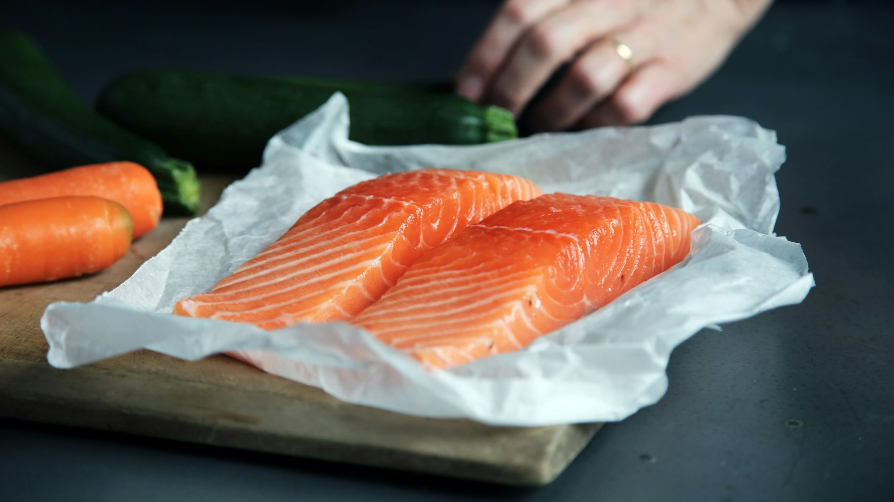
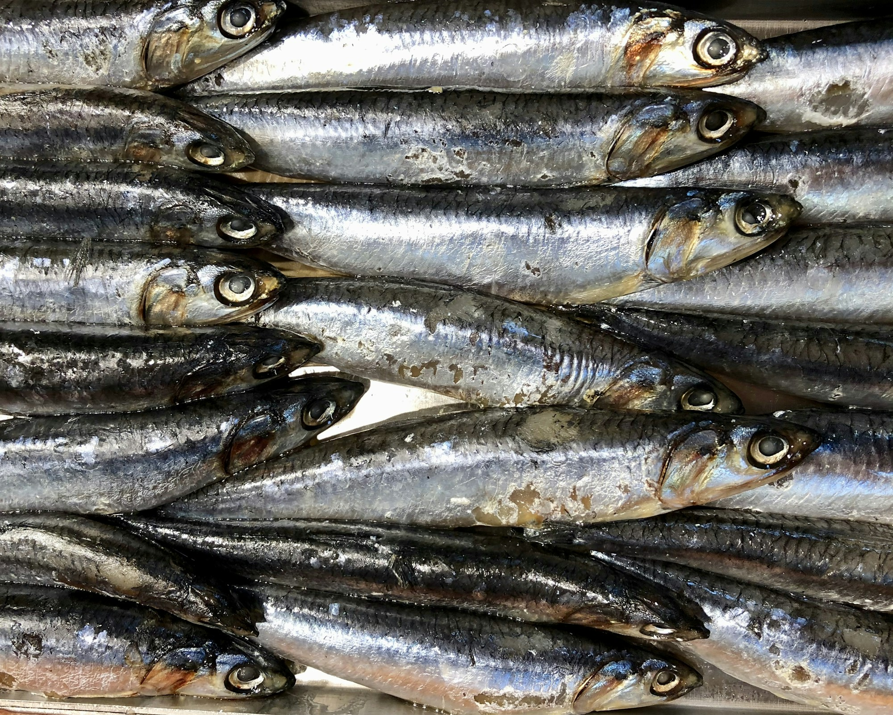
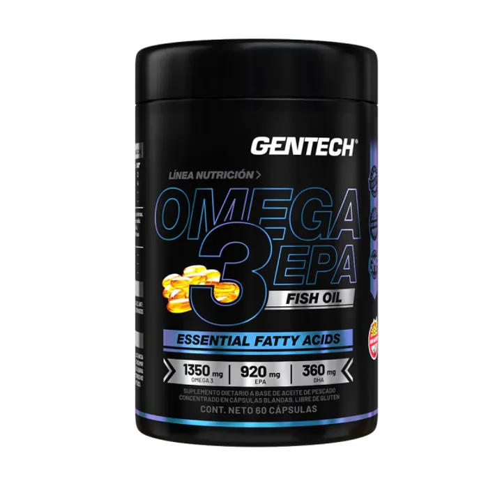
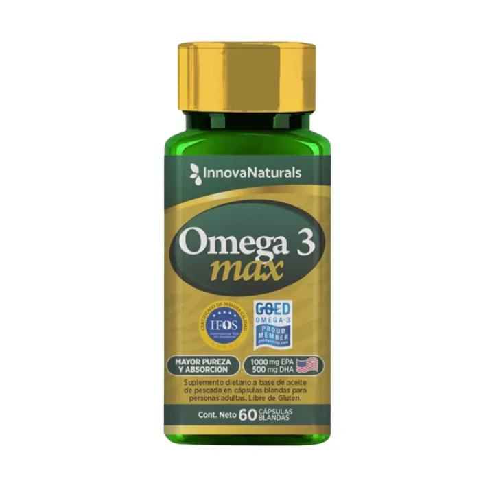
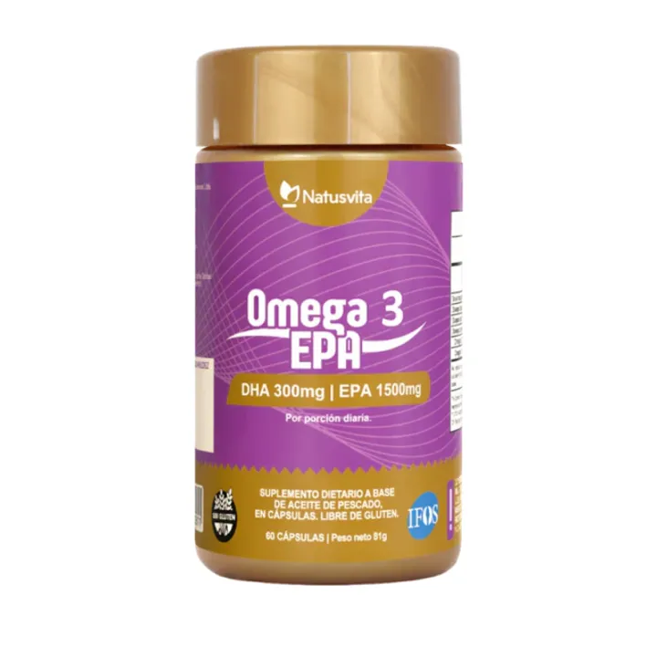
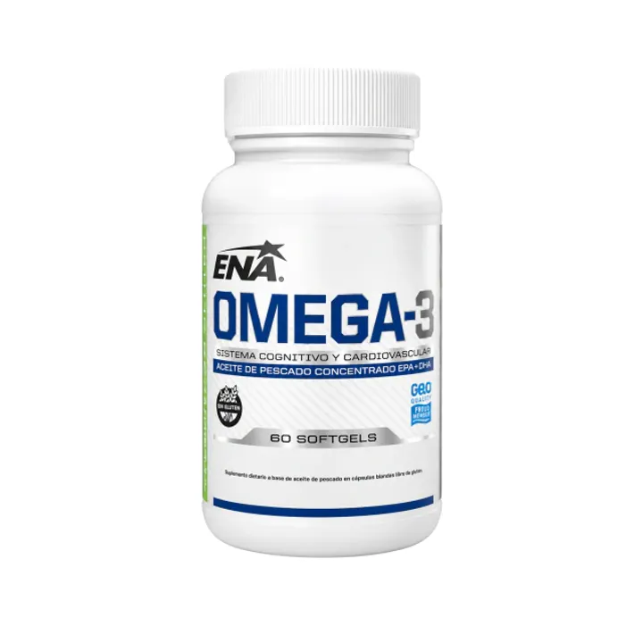

Qué es, dónde está y cuándo conviene suplementarlo.
Los omega 3 son grasas esenciales: hay que obtenerlos de la comida o de un suplemento.
Chía, lino y nueces aportan ALA. El cuerpo convierte muy poco en EPA y DHA.
< 10 %
El pescado graso y el aceite de pescado aportan EPA y DHA ya listos para usar.
Directo
La conversión de ALA a EPA y DHA es baja y varía según la persona.
Participa en procesos vinculados con la salud del corazón y con la respuesta inflamatoria del cuerpo.
Es parte de la estructura de las membranas del cerebro y de la retina.

Es la recomendación general. Las mejores fuentes son los pescados grasos. Si casi no los comés, un suplemento te ayuda a cubrirlo.
01Mirá cuánto EPA + DHA trae por porción, no los mg de “aceite de pescado”.
02Fijate cuántas cápsulas son una porción: a veces son dos.
03Un sello de pureza, como IFOS, garantiza que fue analizado.

Cada 2 cápsulas:
920 mg EPA · 360 mg DHA
Se absorbe mejor y evitás el regusto a pescado.
Los beneficios aparecen con el uso constante, no de un día para el otro.
Así el aceite no se oxida. Y respetá la dosis que indica el envase.


